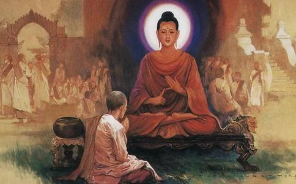

当
而诸比丘对于舍利弗能如此快速
佛陀解释：“诸比丘，你们应当仔细地听好，假经百千劫，所作业不亡，因缘会遇时，果报还自受。这位舍利子，过去世所作过的善业，终将回到自身，不会遗落在他处。
过去很久很久以前，有一处村落，有位
比丘们，就如同大黑蛇，具有五种过患。是哪五种呢？一者多嗔，二者多恨，三者作恶，四者无情无义，五者内含剧毒。你们应当明白女人也同样有这五种过患。除开前四项过患，你们可知为何女人还内含剧毒？这是因为凡所有女人，多怀剧猛爱染渴欲之心。这小女孩长大成人后，身心情欲渐盛，便对他的哥哥说：‘我不想这样经常吃花果。我想去山下人多的地方，找其它的食物。’
哥哥爱护妹妹，只好带著妹妹走出山林，前往一处婆罗门家行乞。兄妹两一起叫唤，屋主人应声出门，一见到兄妹竟误会他们是
哥哥赶忙解释：‘她不是我的妻子，她是我亲妹妹。’
婆罗门立即问哥哥：‘那有没有人曾下娉想娶你妹妹？’
哥哥回答：‘没有。’
婆罗门：‘既然如此，何不将你妹妹许配与我？’
答曰：‘我们都已远离
但妹妹身心情欲炽盛，对其兄说：‘我没办法就这样一辈子在山林里采野果维生。我实在经不起情欲烦恼所逼，所以才提议一起离开林野，重返人烟。你不妨将我许配与这婆罗门。’
哥哥说：‘我实在不能娶你，因为这是逆伦恶法。我不可能作这种事，既然你有情欲，那只好任你情所欲。’
此时婆罗门知年轻女孩心意后，便延入家中，大会宗亲，举行婚礼，纳以为妻。
兄妹情深，妹妹婚后仍依赖哥哥：‘你要与我住一起喔。’
哥哥说：‘我对欲乐没有兴趣，我想
妹妹任性地说：‘如果你想出家，必须答应我一项条件，我才让你离去。’
哥哥问：‘是什么要求？’
妹妹说：‘如果你证得
哥哥承诺：‘没问题，我答应你！’说完随即离去。
哥哥找到一处隐士所居住的处所出家，由于过去宿世善根力的缘故，遂于三十七品菩提分法，无师自悟，证独觉果。
哥哥成辟支佛后，心想：‘我曾答应过我妹妹，修成圣果后要去看她。’便来到妹妹住所，飞到
妹妹兴奋地说：‘大哥，你今天是否已证得殊妙胜德？’
答说：‘没错，我已证得。’
妹妹生起清净心，祈求：‘就算是
答说：‘你可能无权作主，不妨去跟你丈夫商量。’
妹妹立即入屋内找丈夫商量：‘我兄出家，成就禁戒，已得上妙果，世间第一
丈夫回答：‘贤妻，你的哥哥就算不出家，我也会供济他一生，更何况他已出家，还获殊胜道，你可随意供养他三个月。’
在这三个月中，妹妹尽心尽力以种种上妙饮食供给其兄。三月已满，即以上等刀子及针奉施其兄。兄接受后，以刀割截其衣。刀子非常锐利，很快将衣布裁割妥。
妹妹见后，便跪下来，发愿道：‘愿我天资、智商，犹如此刀，思考及反应，犀利敏捷，生生世世，直至未来，成就犀利的智慧。’
此时独觉取衣缝刺，善用针线，缝刺无碍。妹妹见后便发愿：‘愿我从今起，生生世世，乃至未来，令我智慧，犹如此针，智慧深远，通达无碍。’”
佛陀说到这里，便对诸比丘解释：“你们不要误会，过去那位婆罗门女，不是别人，就是今天舍利弗的前身。由于她过去供养独觉，奉施刀、针，以及白布等，加上广发誓愿，由此善根，能在今世获得利智聪明第一。
比丘们，你们应当明白，黑业有黑报，白业得白报。
此时诸比丘仍有疑惑，问世尊：“舍利弗往昔又曾作何业？能于今世出生虽非贵族，但亦非极下贱种姓，于中上阶级
佛陀解释：“你们仔细地听好，过去很久远以前，有一位国王，娶妻未久，尽情享乐，常常游山打猎，没经几年，便诞一子。
其子长大，见其父王不以
打定主意后，来到父王面前说：‘父王，希望您放我出家。’
国王怒斥：‘所有种种祭祠天等，无非希求富贵。你贵为太子，乘象之种，王位在即，你今是何故而求出家？’
国王以种种难听的话呵责太子，就是不放他出家。
有一次，太子乘象出城游观，看见一个穷人持
答言：‘我没有衣钵，如何出家？’
太子说：‘没关系，我会供给你三衣钵等必需品，只要你答应出家。’
穷人高兴地答言：‘太好了！’
太子便如上付与三衣钵。
这时有五通仙人聚在一树下
太子从大象背上下来，走到仙人面前说道：‘圣者，请让这位
仙人们见太子诚恳，即允诺让穷人出家。
太子对穷人说：‘我要走了，如果你修行有成，获证
穷人答应：‘我会的。’
穷人出家后，即往安静之处，静坐修定，秉持宿世善根，遂于三十七品菩提分法，无师自通，证独觉果。
穷人成辟支佛后，忆起太子引渡的恩德，自忖：‘我能证果，皆因太子相助。我应前赴太子宫殿，展示神变。’打定主意，便来到太子宫殿前，飞升虚空，展现种种神变，乃至上身现火光，下身现流水等。’
大家一见神变，心生恭敬，犹如大树崩倒于地，全都伏地顶礼。太子询问辟支佛：‘圣者，您是否已证殊胜果？’
答言：‘是的，我已证。’
太子见后，虽心生
比丘们，你们不要怀疑，过去那位太子，不是别人，正是今天舍利弗的前身。他由于往昔过去誓愿力之故，今生出家，自在无碍。所以你们应当明白因缘果报，自作自受，若作白业，还得白报；若作黑业，还得黑报。你们比丘也应当如此学习。”
比丘们对于舍利弗尊者能蒙受世尊当众赞誉智慧第一的荣誉，仍有疑惑，便问世尊：“舍利弗尊者又是作何福业成熟善根，能于声闻中，蒙世尊当众赞誉智慧第一？”
佛说：“这也是由他昔过去所发愿力之故。”
诸比丘问：“世尊，那他是作何誓愿？唯愿佛陀慈悲，为我们解释。”
佛陀告诉诸比丘：“你们仔细地听，过去很久以前，在贤劫中，当时人类
舍利弗在他老师命终时，广发誓愿：‘愿我所修行梵行功德，以此善根回向，如同迦叶波佛授记我的老师彼嗢怛啰婆罗门一般，在未来世的时候，人类寿命平均百岁，未来有佛出世，叫做释迦牟尼应正等觉，十号具足，我也能于未来佛的教法中出家，断诸烦恼，乃至漏尽，证阿
今世舍利弗所获道果，一如他前世在他老师面前所发的愿，由他当时所发愿力之故，故今世舍利弗能于诸声闻中，获得智慧第一的荣誉。